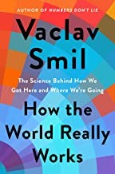

瓦茨拉夫·斯米尔（Vaclav Smil）是捷克裔加拿大科学家，曼尼托巴大学环境学荣休教授，迄今已出版超过四十部关于能源、环境、食品生产、技术创新和人口问题的学术著作。比尔·盖茨（Bill Gates）多次公开称斯米尔是自己最喜欢的作者，说"我会等待他的每一本新书，就像有些人等待下一部《星球大战》电影一样"。2022年，斯米尔以七十八岁高龄出版了《这个世界运作的真相》（How the World Really Works），由维京出版社（Viking）发行。这是他写给普通读者的一部总结性著作，试图用数据和科学方法剥离公共话语中普遍存在的误解与意识形态偏见，帮助读者理解现代文明赖以运转的物质基础。
全书共分七章，前四章分别聚焦能源、食品生产、关键材料和全球化这四大支柱。斯米尔指出，尽管可再生能源的讨论充斥媒体，化石燃料至今仍提供着全球约百分之八十的一次能源供应，而且这一比例在过去二十年间几乎没有实质性下降。现代农业的产量奇迹——养活八十亿人口——建立在合成氨（哈伯-博施法）、化肥、柴油驱动的农机和灌溉系统之上，每一个环节都深度依赖化石燃料。钢铁、水泥、塑料和氨这四种材料构成了现代文明的物质骨架，它们的生产过程排放了全球约百分之二十五的二氧化碳，而目前没有任何经济可行的大规模替代方案。全球化使得数十亿人的生活水平大幅提升，但也创造了极度复杂和脆弱的供应链——新冠疫情暴露了这种脆弱性。后三章转向风险评估、环境问题以及对未来的展望。斯米尔强调，理性的风险评估需要区分主观恐惧与客观概率，而在环境问题上，他既反对否认气候变化的立场，也批评那些许诺几年内即可完成能源转型的不切实际的方案。
斯米尔写作的核心方法论是"以数量级思考"。他反复强调，在讨论能源转型、碳减排或粮食安全等重大议题时，如果不具备基本的数量感——不知道一吨钢铁需要多少焦耳的能量来冶炼，不了解全球每年消耗多少立方米的天然气——那么任何政策讨论都注定流于空谈。这种对定量分析的执着使他的作品区别于大多数关于全球问题的通俗读物。他不讨好任何一方的政治立场：环保主义者会因他对可再生能源转型速度的悲观评估而不满，而化石燃料行业的支持者也不会喜欢他对气候变化严重性的确认。
对于投资者和商业决策者而言，这本书的价值在于提供了一个"物质现实"的参照系。当市场热议某种新能源技术或碳中和路线图时，斯米尔的分析框架可以帮助读者判断这些叙事在物理和工程层面是否站得住脚。他不提供投资建议，但他提供的东西或许更为根本——一种基于事实和数据而非愿望和口号来理解世界的能力。在一个充斥着简单叙事和极端立场的时代，这种清醒的定量思维本身就是一种稀缺资源。